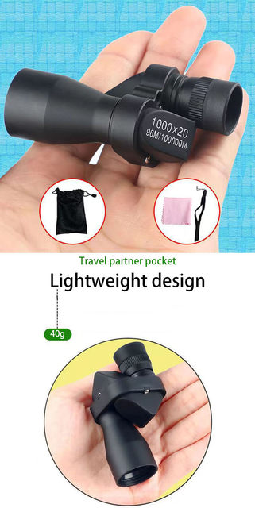
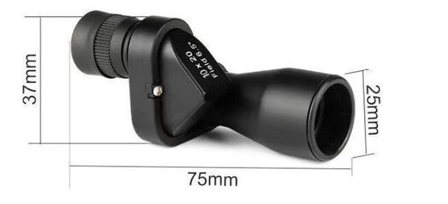
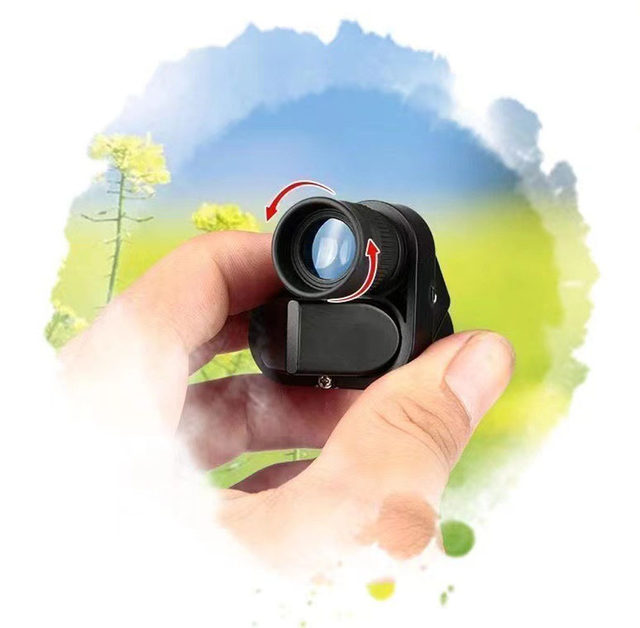
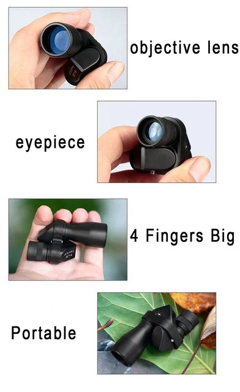
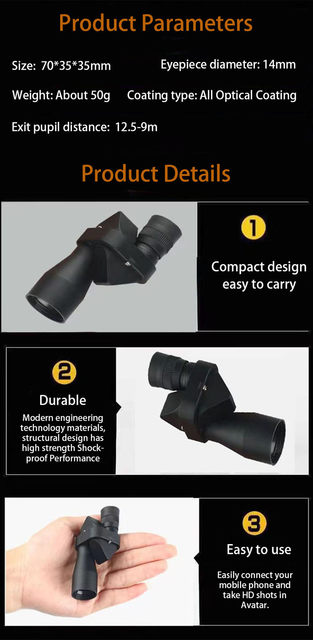

• High Magnification :The Portable HD Mini Pocket Monocular Telescope has high magnification power, allowing you to see distant objects clearly.
• Water Resistance Level IPX4 :With an IPX4 water resistance level, this monocular telescope is perfect for outdoor activities like fishing and hunting in any weather condition.
• Central Focus Type :The central focus type of this monocular telescope ensures that your target remains in focus, making it easier to observe and study.
• Lens Coating Description :The lens coating description of this monocular telescope is not provided, but its high-quality lenses ensure clear and accurate visuals.
Product Type: Portable HD Night Vision Mini Pocket Monocular Telescope
Color: Black
Magnification: 8 times
Eyepiece diameter: 10MM
Objective lens diameter: 20mm
Exit pupil distance: 12.5-9 m
1. If the item damaged, please contact us firstly immediately before leave feedback, thanks for your understanding
2. Due to hand measure, the size may have 1-2 cm error
3. Due to Different Monitor, the color may have difference




